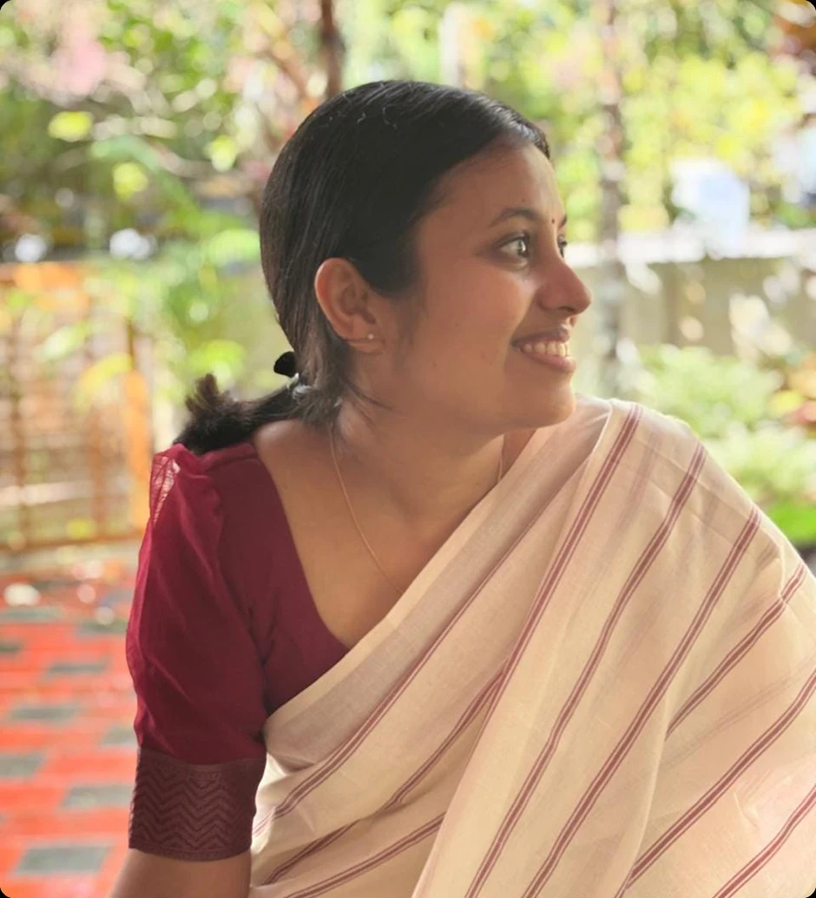
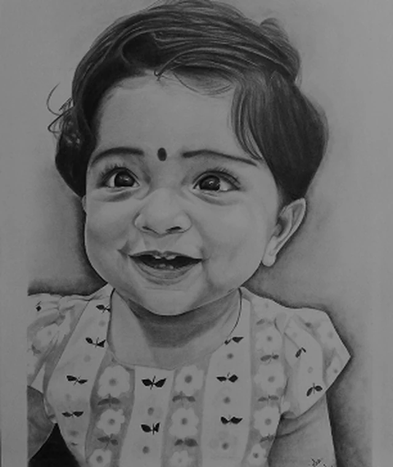
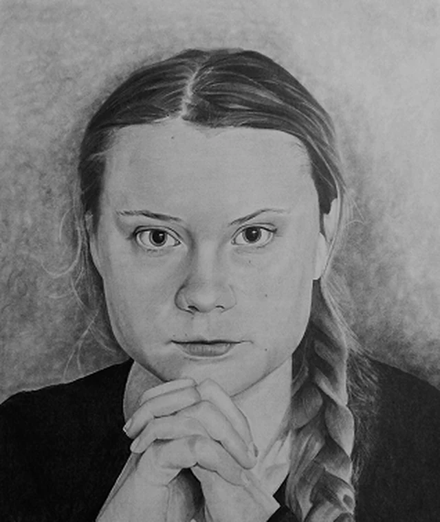
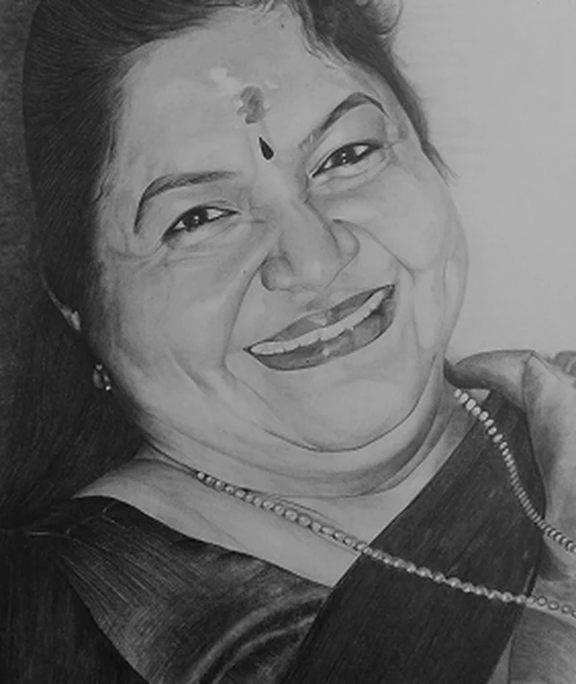
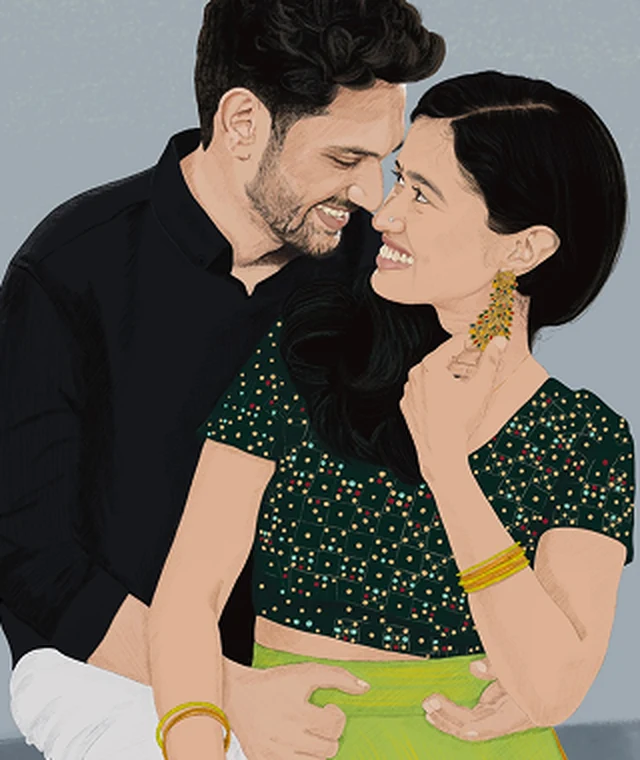
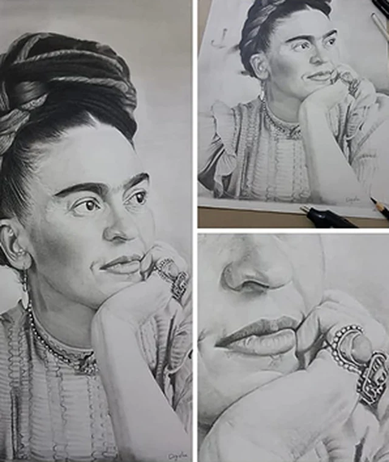
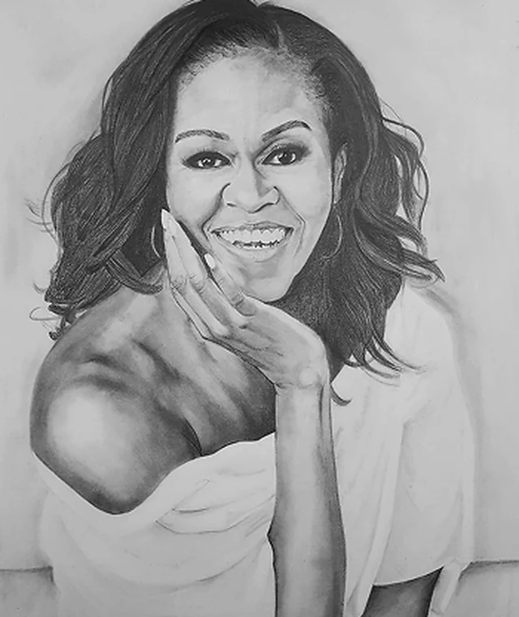
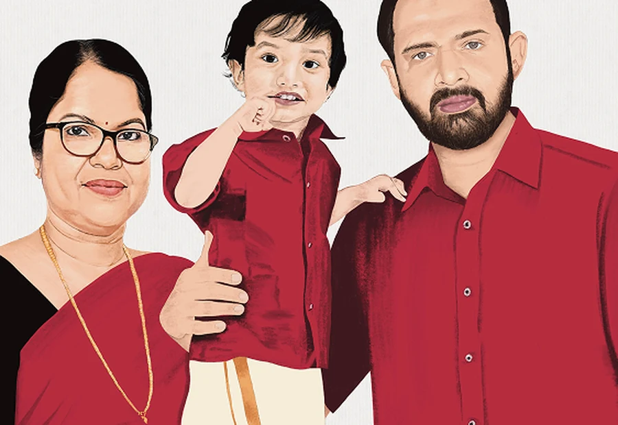
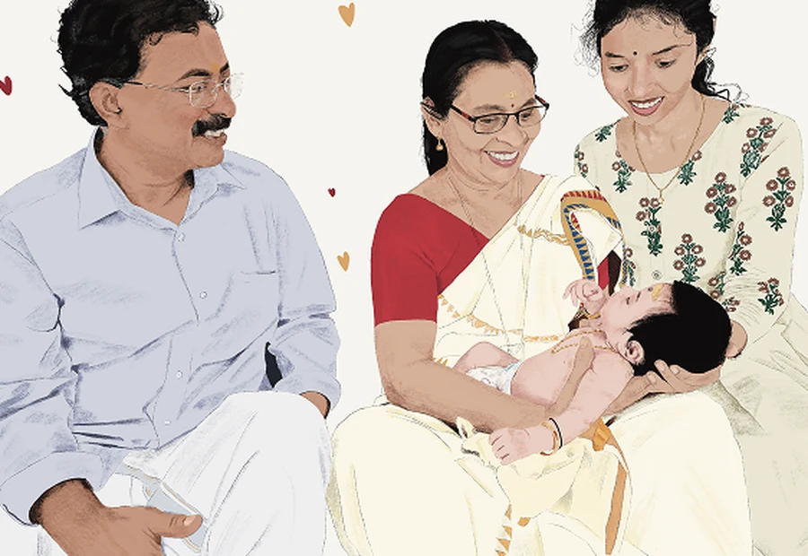

I'm Digisha — a UX/UI designer with an engineering foundation and several years of web and visual design behind me.
I believe good design starts with understanding people and keeping things simple.
I currently work at Clodoc, a healthcare SaaS platform — building experiences for doctors, patients, and pharmacies. The stakes are high and the workflows are messy, and that's taught me to slow down, ask better questions, and treat every detail as something a real person will depend on.
I'm a self-taught artist who enjoys hyperrealistic and digital portraits, and I like experimenting with crafts from time to time. Away from the screen, I find joy in books, food documentaries, and the simple ritual of cleaning the house.







